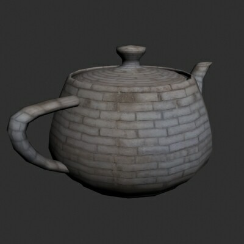
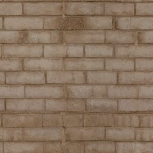
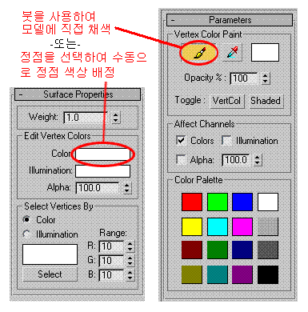
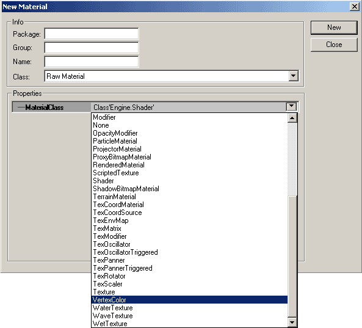
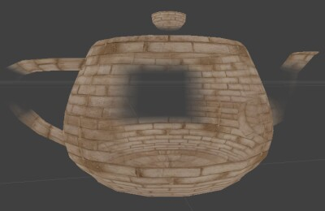

UDN
Search public documentation:
VertexBlendingTutorialKR
English Translation
日本語訳
中国翻译
Interested in the Unreal Engine?
Visit the Unreal Technology site.
Looking for jobs and company info?
Check out the Epic games site.
Questions about support via UDN?
Contact the UDN Staff
日本語訳
中国翻译
Interested in the Unreal Engine?
Visit the Unreal Technology site.
Looking for jobs and company info?
Check out the Epic games site.
Questions about support via UDN?
Contact the UDN Staff
정점 블렌딩 튜토리얼
문서 요약: StaticMeshes 에서의 정점 블렌딩 사용법, 그리고 그것을 Unreal Ed 에 가져오기 하는 방법을 보여주는 튜토리얼. 문서 변경 내역: 최종 업데이트 Jason Lentz (DemiurgeStudios?) - Material 브라우저의 특별 단계 및 추가 예제 다운로드를 포함하기 위한 업데이트. 원저자 Jesse Taylor (Structure Studios).정점 블렌딩이란?
한 마디로, 정점 블렌딩 은 메쉬에 있는 한 소재를 vertex painting (정점 채색)이라는 방법을 사용하여 사전 정의된 정점을 따라 다른 메쉬로, 또는 무(無)에 블렌드하는데 사용됩니다. 이것은 그 단순성 및 유연성으로 인해 상당히 광범위한 이점을 가지고 있습니다. 복잡한 스킨 메쉬를 사용하지 않고도 훨씬 더 사실적이고 자연스러워 보이는 모델들을 작성하는 것이 가능합니다. 게다가 같은 소재를 다른 모델에 재사용하거나 메쉬에서 소재들을 교환할 수 있습니다.과정
모든 것이 모델의 준비와 함께 시작됩니다. 자세한 것은 설명하지 않습니다만 이 튜토리얼에서는 정적 메쉬 내보내기의 처리에 대해 3D Studio Max 가 참조됩니다. 그밖에 이 튜토리얼에서는 정점 블렌딩의 3 가지 기본 방법에 대해 다룹니다.- 같은 UV 매핑을 사용하여 한 소재에서 다른 소재로 블렌드하기.
- 한 소재에서 무로 블렌드하기.
- 두 개의 다른 UV 매핑 좌표를 사용하여 (2 개의 UV 채널) 한 소재에서 다른 소재로 블렌드하기.
같은 UV 매핑으로 블렌드하기
이 옵션은, 아래에서 볼수 있듯이, 같은 UV 좌표를 사용하여 한 소재에서 다른 소재로 블렌드할 수 있도록 합니다.
이 예에는 다음과 같은 두 가지 텍스처가 사용되었습니다.

그림에서 볼 수 있는 것처럼, 갈색 벽돌이 같은 매핑 좌표를 유지하면서 회색 벽돌 내로 블렌드됩니다. 이것의 많은 용도 중 몇 가지 예를 들자면, 금속에 녹 추가하기, 불에 탄 나무, 바위 위의 흙 자국, 이끼로 덮인 나무, 옷감의 주름 등이 있습니다. 3D Max 에서 텍스처된 메쉬를 사용하여 시작합니다. 아래와 비슷한 모습입니다. 정점에 색상을 적용하는 방법에는 2 가지가 있습니다.
정점에 색상을 적용하는 방법에는 2 가지가 있습니다. - 모델이 편집 가능한 메쉬인 동안에 각 정점을 선택한 다음, "Surface Properties (표면 속성)" 아래서 "Edit Vertex Colors (정점 색상 편집)"를 사용하여 수동으로 정점 색상을 배정하는 방법.
- Modifier List (변경자 목록)의 Edit Mesh (메쉬 편집) 섹션에서 VertexPaint 변경자를 사용하는 방법. 페인트 붓을 선택하고 모델을 오른 클릭하면 정점을 채색하게 됩니다 (어느 정점을 채색하고 있는지 보려면 "VertCol" 토글을 클릭합니다).

위 두 가지 방법들이 모두 3DS Max 에서 최종 결과를 보여주지 않는다는 점에 주목하십시오. 최종 효과를 보기 위해서는 모델을 Unreal 에 가져오기 해야 합니다.정점을 채색하는데 흑백을 사용하는 것이 가장 좋습니가. 정점 색상의 본질이 색상들을 자동적으로 서로 블렌드되게 하므로, 정점 색상의 수동 블렌딩이 불필요할 때가 많습니다. 메쉬가 원하던대로 채색되면, 내보내기 준비가 된 것입니다. 내보내기 하기에 앞서 모델이 어떻게 보일지 정말 보고 싶다면, 3D Max 의 블렌드 소재를 Mask 매개변수의 정점 색상 소재와 함께 사용한 다음 렌더해야 합니다. 그렇지 않으면 vertex colors 를 체크하여 메쉬를 내보내기 하십시오. 에디터에서 다음 텍스처들로 이루어진 쉐이더를 작성해야 합니다 (아래의 소재 트리에도 표시되어 있습니다):- 컴바이너 (Diffuse)
- TexCoordSource 변경자 (소재1)
- 텍스처 (가져오기 하는 첫 번째 베이스 텍스처)
- TexCoordSource 변경자 (소재 2)
- 텍스처 (가져오기 하는 두 번째 베이스 텍스처)
- 정점 색상
- TexCoordSource 변경자 (소재1)
 최종 쉐이더를 포함, 통틀어 모두 7 개의 소재가 있어야 합니다. 다음은 이들을 각각 작성하는 방법을 작성되어야 하는 순서대로 설명한 것입니다.
베이스 텍스처들과 StaticMesh 를 가져오기한 후, Texture 브라우저를 열어 새 소재를 작성합니다. Material Class 풀다운 메뉴에서 Vertex Color 를 선택한 다음 패키지, 그림, 그리고 이름 정보를 입력합니다.
최종 쉐이더를 포함, 통틀어 모두 7 개의 소재가 있어야 합니다. 다음은 이들을 각각 작성하는 방법을 작성되어야 하는 순서대로 설명한 것입니다.
베이스 텍스처들과 StaticMesh 를 가져오기한 후, Texture 브라우저를 열어 새 소재를 작성합니다. Material Class 풀다운 메뉴에서 Vertex Color 를 선택한 다음 패키지, 그림, 그리고 이름 정보를 입력합니다.

"New" 버튼을 클릭하면, 이 소재의 작성이 끝납니다. 이것은 이 새 소재를 사용하는 소재가 그것이 속해있는 하위 섹션에 대해 메쉬의 정점 색상을 활용하라고 지시하는 것입니다. 다음에 작성해야 할 소재는 TexCoordSource 소재입니다. 또 하나의 새 소재를 작성하되, 이번에는 Material Class 풀다운 메뉴에서, TexCoordSource 를 선택합니다. 이것을 두 개 만들고 (하나는 베이스 텍스처용, 또 하나는 블렌드 텍스처용), SourceChannel Material 필드에서 상응하는 텍스처들을 배정해야 합니다. 이제 풀다운 메뉴에서 Combiner 를 선택함으로써 컴바이너 소재를 작성해야 합니다. Material1 에 베이스 텍스처로부터 TexCoordSource 소재를 배치하십시오. Material2 에 블렌드 텍스처로부터 TexCoordSource 소재를 배치하십시오. Mask 에 처음에 작성한 VertexColor 를 배치하십시오. 또한 반드시 CombineOperation 이 CO_AlphaBlend_With_Mask 이고 AlphaOperation 이 AO_Use_Mask 가 되도록 하십시오. 마지막으로, Material Class 풀다운 메뉴에서 Shader 옵션을 선택함으로써 이 소재들을 모두 활용하는 쉐이더를 작성하게 됩니다. 방금 만든 컴바이너 소재를 Diffuse 채널에 배정하면 거의 다 된 것입니다! 이제 쉐이더를 정적 메쉬에 적용하면, 그 결과를 볼 수 있게 됩니다.
한 소재에서 무로 블렌드하기
다음과 비슷한 결과를 얻는 것은...
...아주 간단합니다. 정점 채색에서 사용한 것과 같은 방법을 사용하는데, 새 쉐이더를 설정하기만 하면 됩니다. Diffuse 엔트리에, 베이스 텍스처를 사용하십시오. Opacity 엔트리에는 VertexColor 소재를 사용하십시오. 이제 이 쉐이더를 정적 메쉬에 적용하십시오. 이것을 적용할 수 있는 예로는 폭포 메쉬를 물 위아래로 블렌드하기 또는 다양한 지역에 흙더미를 추가하는 것 등이있습니다.두 개의 다른 UV 채널로 블렌드하기
이것은 부가적인 UVW 맵을 스택에 추가하고 3D Max 에 맵 채널 2 를 사용하라고 지시하는 것을 제외하면 기본적으로 3D Max 의 경우와 같이 취급됩니다. 뷰포트에서는 한 번에 1 개 이상의 채널을 볼 수 없으므로, Material Editor 에서 두 번째의 소재를 적용하고 이것의 맵 채널을 2 로 설정합니다. 두 번째 채널이 원하던 대로 맵되면, 내보내기를 할 수 있습니다.
UnrealED 에서, 새 소재를 작성하고, MaterialClass 목록에서 TexCoordSource 를 선택하십시오. SourceChannel 에 1 을 입력하십시오. Material 엔트리에는 블렌드 텍스처를 입력하십시오. 이 TexCoordSource 소재는 텍스처를 지정한 맵 채널에 적용하라고 지시하는 것입니다. 무슨 이유에선지, 텍스처 브라우저에서는 TexCoordSource 소재가 0 이 아닌 채널의 텍스처에 대해 균일한 평균 색상만을 표시합니다.
이제 새 컴바이너를 작성합니다. Material1 에 베이스 텍스처를 입력하십시오. Material2 에는 TexCoordSource 소재를 입력하십시오. 그리고 Mask 에는 VertexColor 소재를 입력하십시오. 그 다음 쉐이더를 작성하고 그 컴바이너를 Diffuse 채널에 넣어, 메쉬에 정점 색상을 사용하는 컴바이너를 사용하는 것으로 인해 발생할지도 모르는 문제를 방지하십시오.
이 작업이 끝나면 이 쉐이더를 정적 메쉬에 적용합니다. 그러면 두 소재가 서로 다른 매핑 좌표를 사용하여 적용되는 것을 볼 수 있습니다.
두 번째 채널이 원하던 대로 맵되면, 내보내기를 할 수 있습니다.
UnrealED 에서, 새 소재를 작성하고, MaterialClass 목록에서 TexCoordSource 를 선택하십시오. SourceChannel 에 1 을 입력하십시오. Material 엔트리에는 블렌드 텍스처를 입력하십시오. 이 TexCoordSource 소재는 텍스처를 지정한 맵 채널에 적용하라고 지시하는 것입니다. 무슨 이유에선지, 텍스처 브라우저에서는 TexCoordSource 소재가 0 이 아닌 채널의 텍스처에 대해 균일한 평균 색상만을 표시합니다.
이제 새 컴바이너를 작성합니다. Material1 에 베이스 텍스처를 입력하십시오. Material2 에는 TexCoordSource 소재를 입력하십시오. 그리고 Mask 에는 VertexColor 소재를 입력하십시오. 그 다음 쉐이더를 작성하고 그 컴바이너를 Diffuse 채널에 넣어, 메쉬에 정점 색상을 사용하는 컴바이너를 사용하는 것으로 인해 발생할지도 모르는 문제를 방지하십시오.
이 작업이 끝나면 이 쉐이더를 정적 메쉬에 적용합니다. 그러면 두 소재가 서로 다른 매핑 좌표를 사용하여 적용되는 것을 볼 수 있습니다.